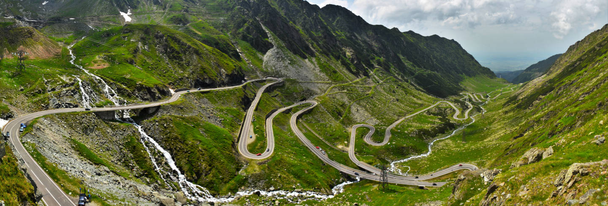

Radu-Alexandru Dragomir
- Post-doctoral researcher in computational mathematics -

Research
I study optimization methods for solving large-scale problems from various areas of engineering and science such as signal processing and machine learning.
I mainly focus on algorithms which use non-Euclidean updates in order to adapt to the geometry of the objective function (such as mirror descent and Bregman methods). I also work on the computer-aided analysis technique called performance estimation.
Refereed publications
- R-A. Dragomir, M. Even, H. Hendrikx. Fast Stochastic Bregman Gradient Methods: Sharp Analysis and Variance Reduction.
International Conference on Machine Learning, 2021.
[PMLR]
[arxiv] [slides]
- R-A. Dragomir, A. B. Taylor, A. d'Aspremont, J. Bolte. Optimal Complexity and Certification of Bregman First-Order Methods.
Mathematical Programming, 2021.
[springer]
[arxiv]
[GeoGebra demo]
[code]
- R-A. Dragomir, A. d'Aspremont, J. Bolte. Quartic First-Order Methods for Low-Rank Minimization.
Journal of Optimization Theory and Applications, 2021.
[springer]
[arxiv]
[code]
Thesis
- R-A. Dragomir, Bregman Gradient Methods for Relatively-Smooth Optimization.
PhD thesis, 2021.
Advised by Jérôme Bolte and Alexandre d'Aspremont. [pdf]
[slides]
[video]